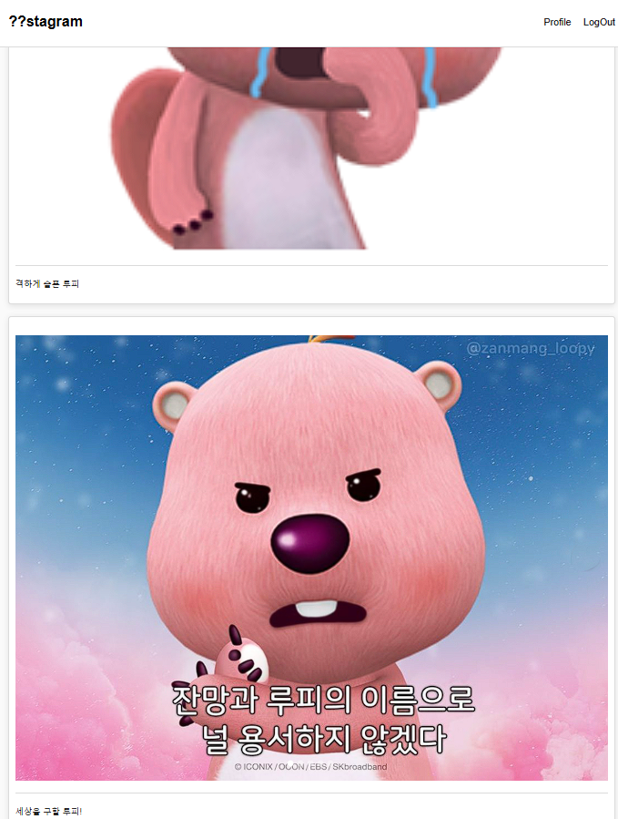
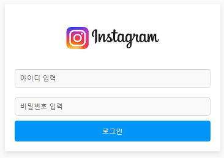
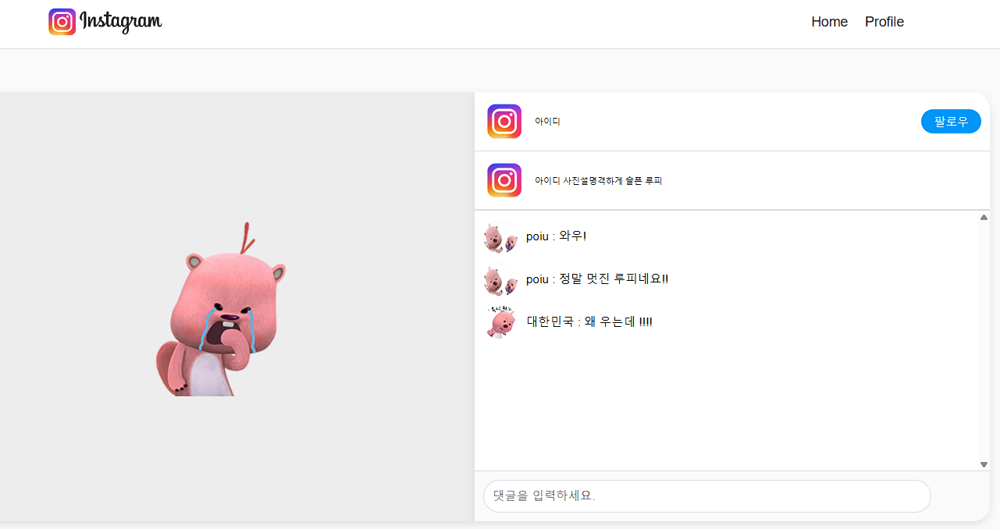
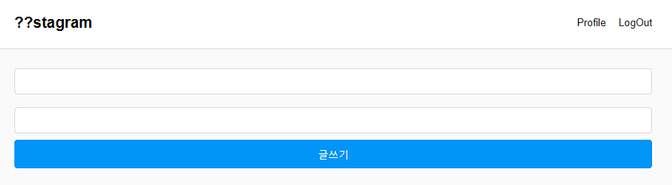

YS.HWANG
Home
우편인
??stagram
??stagram
OVERVIEW
교육 도중 처음 팀을 구성하여 만들었던 미니 프로젝트 입니다. 인스타그램의 중요 기능을 구현해봤습니다. 모든 코드는 vs code로 작성하였고, DB를 배우지 않았을 시기라 로컬스토리지 를 활용했습니다.
FEATURES
게시글 작성(첨부파일 주소 활용), 댓글달기(로컬스토리지에 등록된 아이디를 기준으로)
SKILL
jQuery, Javascript, Css, Html, Json, Visual Studio Code
   